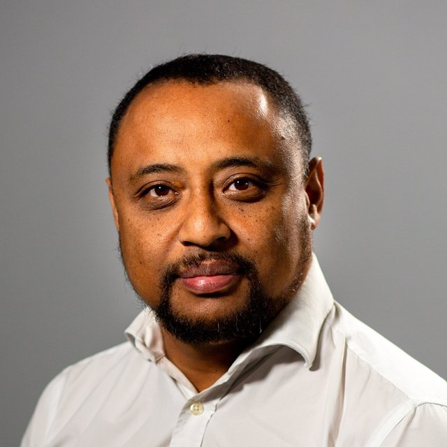
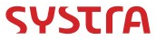

Jaozaka Razafimahazo
Directeur / chef de projet infrastructure & sécurité · 15+ ans d'expérience
Ingénieur EPITA, je pilote des projets de transformation d'infrastructure et de cybersécurité pour la banque, la grande distribution et les télécoms. Je fais travailler ensemble les équipes techniques et les métiers, en France comme à l'international, dans le respect des coûts, des délais et de la qualité.
Côté métiers
Direction & CODIRMétiersAchatsContrôle de gestionUtilisateurs
Côté technique
Systèmes & cloudRéseauxSécuritéBases de donnéesDéveloppeursUn seul interlocuteur qui parle le langage des métiers et celui des équipes techniques
Ils m'ont confié leurs projets
Banque, distribution, télécoms, énergie, industrie





Du cadrage au run, à chaque niveau de responsabilité
Selon le contexte, j'interviens comme chef de projet opérationnel, directeur de projet ou de programme, avec toujours la même base : une vraie compréhension technique.
Chef de projet
Je tiens le triptyque coût, délai, qualité, de la note de cadrage à la mise en production.
- Plan projet : budget, planning, charge, risques
- Pilotage des prestataires et des intégrateurs
- Livrables : DAT, DEX, PV de recette, REX
- Build to run et transfert à l'exploitation
Directeur de projet / programme
Je porte les programmes devant les instances de décision et j'arbitre entre les projets.
- Gouvernance : COPIL, COPROJ, CODIR, COMEX
- Budgets jusqu'à 5 M€, CAPEX / OPEX, ROI
- Appels d'offres, POC et négociation
- Programmes multi-pays et roadmaps IT
Expertise infra & sécurité
Je challenge les solutions avec les experts, car j'ai moi-même administré, développé et déployé.
- Serveurs, virtualisation et cloud
- Réseaux LAN / WAN, WiFi, fibre
- Sécurité : PAM, firewall, proxy, SAST
- Bases de données et middleware
Une culture technique sur toute la pile
Avant de diriger des projets, j'ai été développeur, ingénieur système AIX et DBA Oracle. Je parle le même langage que les équipes que je coordonne.
SécuritéAccès à privilèges, filtrage, sécurité applicative
- CyberArk PAM
- IAM
- Firewalling
- WAF
- Proxy Netskope
- SAST / IAST / DAST
- ISO 27001 (certification en cours)
- Loi de programmation militaire
RéseauxLAN, MAN, WAN, WiFi, fibre
- LAN / MAN / WAN
- FTTH (GPON)
- Interop ARCEP
- MPLS multi-VRF
- WiFi Aruba & Cisco
- Cisco & Huawei N2 / N3
- ToIP
Serveurs & cloudSystèmes, virtualisation, poste de travail
- Windows Server
- Linux / Unix
- AIX
- VMware / NSX
- Nutanix
- Azure
- AWS
- GCP
- Cloud privé
- Active Directory / DNS
- SCCM / Intune
- Citrix
Bases de données & middlewareDonnées, flux et intégration
- Oracle
- SQL / PL-SQL
- MySQL
- Informatica
- Talend
- Kafka
- Boomi
- WebSphere
- Kubernetes
Je traduis les contraintes techniques en décisions métier, et les besoins métier en plans d'action techniques.
La communication comme outil de pilotage
Comités de direction, war rooms, ateliers techniques, onboarding d'administrateurs à Singapour ou à New York : j'adapte le message à chaque public.
Une vraie capacité d'adaptation
Banque, distribution, télécoms, énergie, défense ; grands groupes comme start-up ; du terrain (sites 3G, centres d'appel) jusqu'au conseil d'administration.
Des équipes qui avancent ensemble
Jusqu'à 50 personnes coordonnées en transverse, internes, prestataires et équipes offshore, sans lien hiérarchique direct.
Ma méthode, en trois phases
Chaque phase produit ses livrables et passe par une validation avant la suivante.
- 1
Étude
- Note de cadrage
- Dossier d'engagement projet
- Analyse d'impact et de risques
- 2
Analyse
- Kick-off analyse
- Plan projet : planning, charge, budget, RACI, risques
- Appel d'offres et POC
- Dossier d'architecture
- 3
Réalisation
- Kick-off réalisation, plan de migration
- QQQ des opérations build to run
- Reporting et remontée des risques
- Dossier d'exploitation et bilan projet
Un projet d'infrastructure ou de cybersécurité à piloter ?
Mission de direction de projet, de programme ou poste en CDI : parlons-en.